How to build a song — from empty rack to finished track
You already know how to place notes. This booklet is about everything around the notes:
getting instruments in, understanding tracks, and wiring a few patterns into a full song.
Everything in GENENGINE flows through three layers. Once this picture clicks, setup stops being hard:
INSTRUMENTS
Live in the CHANNELS rack. You add them from the LIBRARY. Each one is a row: a synth, a drum, or one of your samples.
→
PATTERNS
Short musical phrases — a drum loop, a bassline, a chord progression. Notes for any instrument can go in any pattern.
→
SONG
In the PLAYLIST, you paint patterns onto tracks in time. Repeat them, stack them, arrange them — that's the song.
Coming from GarageBand or Logic?
This is the one habit to unlearn: there, a track is an instrument — you add a track, pick a sound, and play into it.
Here they're separate. Instruments live in the rack. Playlist tracks are empty shelves.
A track never "has" an instrument — it just holds pattern clips, and any pattern can sit on any track.
So when you think “I want to add a piano”, you're not adding a track — you're adding a channel from the Library.
CH 02
Adding instruments (the part that was fighting you)
Press F8 — or click the 📚 LIBRARY tab.
Click any card once to hear it. This is just an audition — nothing is added yet. Browse with the category chips: Bass, Lead, Pluck, Pad, Keys, FX, Drums.
Found one you like? Click the ＋ button in the card's top-right corner. A toast confirms: “＋ added to rack”.
Press F6 (▦ CHANNELS). Your instrument is the new row at the bottom of the rack, already selected and ready to play — try the Z–M keys.
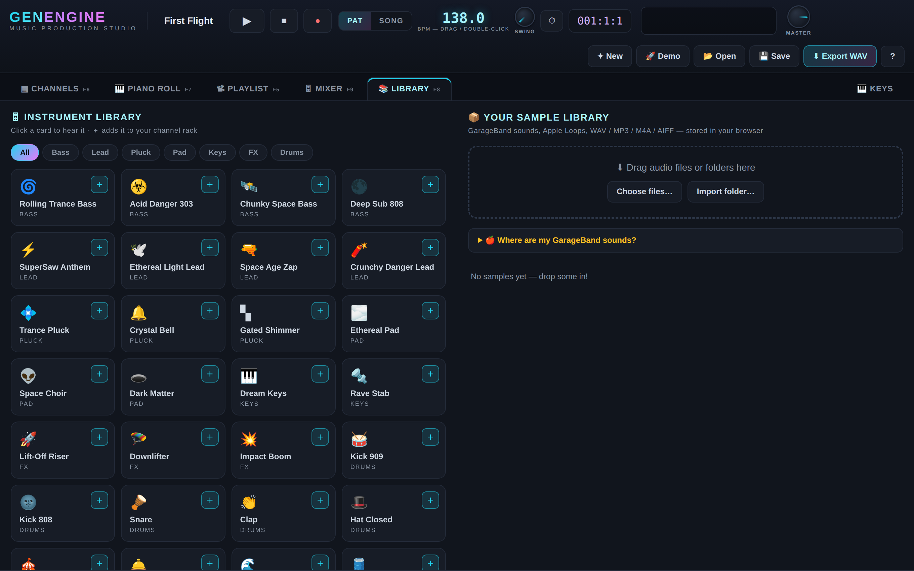
The Library. Click a card = hear it. The little ＋ on the card = add it to your rack.
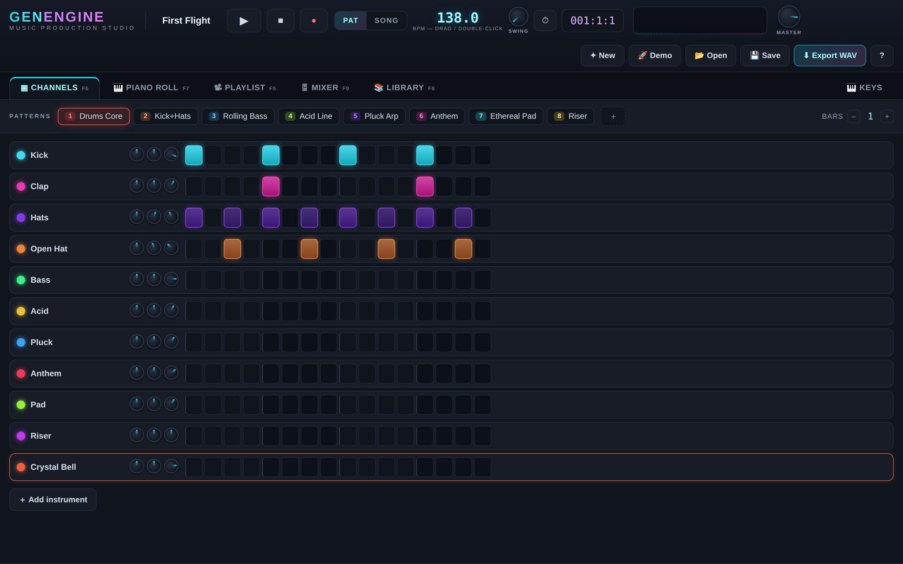
After clicking ＋ on “Crystal Bell”: it appears as the bottom row of the CHANNELS rack, selected and outlined.
Anatomy of a channel row
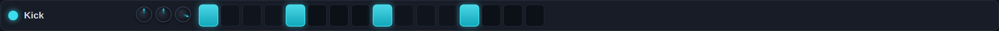
One instrument = one row.
Colored dot — click to mute/unmute. Right-click to solo (hear only this one).
Name — click to select it (your computer keyboard and the on-screen KEYS play the selected channel). Double-click opens the Piano Roll. Right-click for the menu: rename, duplicate, delete, clear steps.
Three small knobs — pitch, pan, volume for that instrument.
Step buttons — the 16-per-bar grid you already know. Click to place, drag up/down on a lit step for velocity, right-click to clear.
Try it now — a starter kit in 60 seconds
From the Library, add these seven: Kick 909, Clap, Hat Closed, Hat Open (Drums) ·
Rolling Trance Bass (Bass) · Trance Pluck (Pluck) · Ethereal Pad (Pad).
That's a complete trance toolkit — every song in this booklet can be built from it.
Adding your own sounds (GarageBand samples)
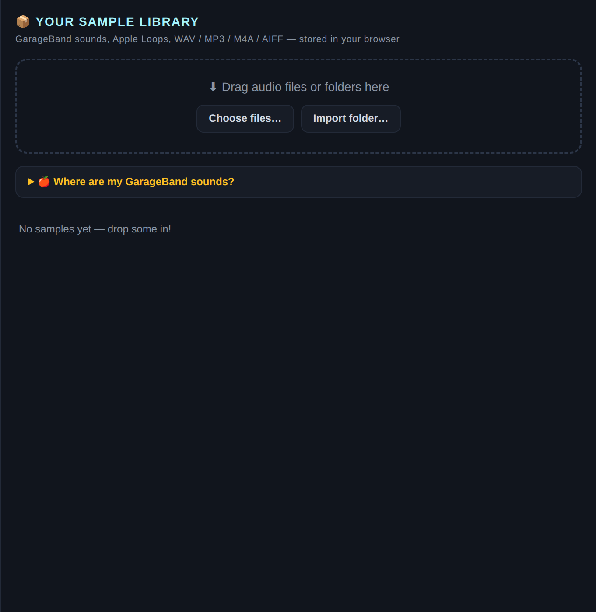
The right half of the Library is your collection.
On your Mac, double-click Harvest GarageBand Sounds.command once (right-click → Open the first time). It converts everything GarageBand has into Desktop → Music GenEngine → GarageBand Sounds.
In the Library's right column, click Import folder… and pick that folder (or drag files straight onto the drop zone).
Each sample gets a row in the list: ▶ previews it, ＋ rack turns it into a sampler channel — playable across the whole keyboard, up and down in pitch, just like any synth.
If you hear nothing when auditioning
Browsers keep audio locked until your first click anywhere on the page — click once, then audition again.
Also check the MASTER knob (top-right of the transport bar) and your Mac's volume.
CH 03
Patterns — where notes live
A pattern is a short phrase, usually 1–4 bars: a drum groove, a bassline, a chord pad.
You'll write a handful of them, then repeat and combine them into a song.
The golden habit: one job per pattern. Keep drums in one pattern, bass in another,
melody in a third — it makes arranging in the Playlist effortless.
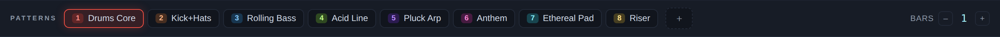
The pattern bar sits above the rack. Click a chip to switch pattern · ＋ makes a new empty one · right-click a chip to rename, clone, or delete · BARS − / + sets its length.
Drums — light up steps in the rack. Kick on 1, 5, 9, 13 is house/trance law.
Melodies & bass — double-click the channel name → Piano Roll. You've got this part already: snap down to 1/64, drag, resize, right-click erase.
Switching instruments inside the Piano Roll — click the colored pill at the top-left of its toolbar to jump between channels without leaving the editor.
While it plays — press Space in PAT mode and the current pattern loops while you edit. Click another pattern chip (or press 1–9) and it queues up to switch at the next loop — live performance, Ableton style.
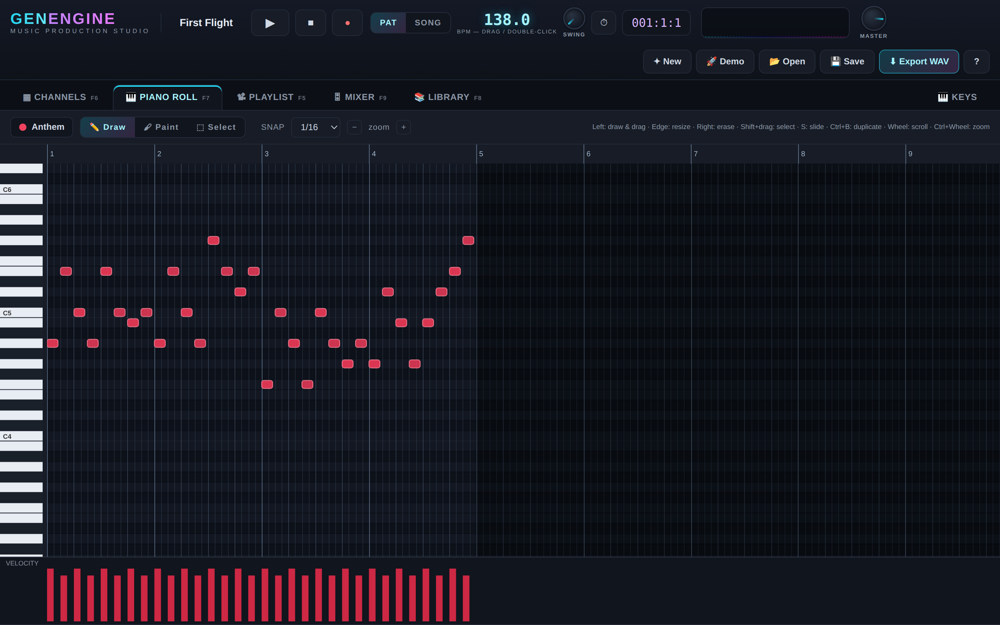
The Anthem melody from the demo song, in the Piano Roll.
CH 04
Tracks & the Playlist — turning patterns into a song
Press F5. The rows on the left are tracks — and here's the answer to the
setup confusion: tracks are empty shelves. You never “add an instrument to a track.”
You paint pattern clips onto them, wherever and however often you like.
(Double-click a track's name to rename it — “Drums”, “Bass”, “Leads” — purely for your own tidiness.)
Pick your BRUSH — the dropdown in the Playlist toolbar chooses which pattern you're about to paint.
Click on empty space in any track — a clip of that pattern appears, snapped to the bar.
Drag its right edge to stretch it — the pattern repeats inside the clip (you'll see the repeat lines). One 1-bar drum pattern can carry 8 bars with a single clip.
Drag the middle to move it anywhere — any bar, any track. Right-click erases. Double-click opens that pattern for editing.
Press Space — the transport is in SONG mode on this tab, so you hear the arrangement. Shift-drag the ruler to set the loop region; click the ruler to jump.
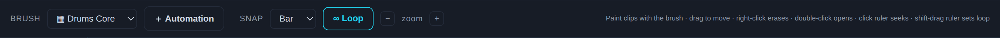
The Playlist toolbar: BRUSH picks the pattern, ＋ Automation creates a sweep, ∞ Loop toggles the loop region.
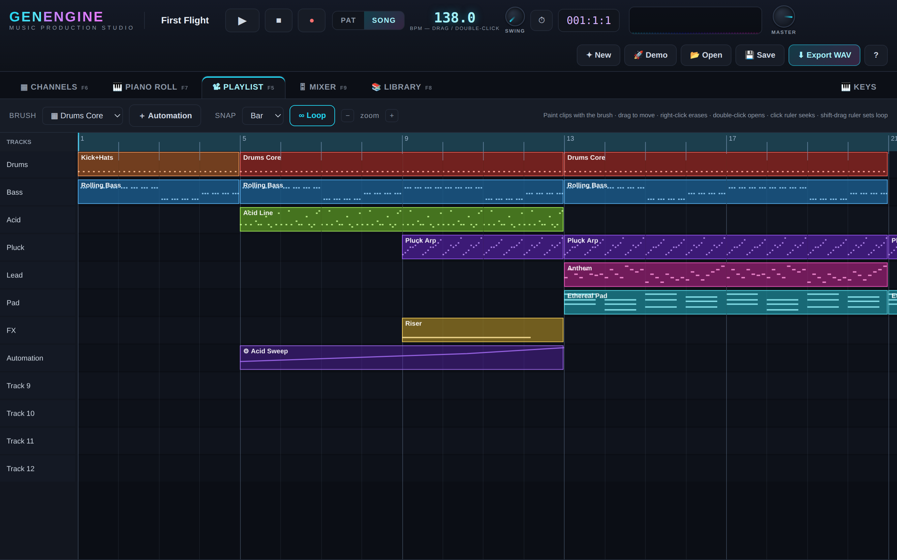
The demo song's whole arrangement. Read it like a story: intro → build → drop → outro.
The arrangement recipe (steal this)Intro (bars 1–8): kick + hats + bass only. ·
Build (9–16): add pluck and acid, drop a Riser over the last 4 bars. ·
Drop (17–24): everything at once — lead, pad, full drums. ·
Outro (25–28): strip back to pad + pluck.
Click 🚀 Demo in the top bar and study “First Flight” in the Playlist — it's this exact shape.
PAT vs SONG (the two play modes)PAT loops the current pattern — your editing mode. SONG plays the Playlist — your listening mode.
Switching tabs picks the sensible one automatically (Channels/Piano Roll → PAT, Playlist → SONG), and you can always override with the toggle in the transport bar.
“My song is silent but the pattern plays” is almost always: you're in SONG mode with no clips painted yet.
CH 05
The Mixer — level, space, character
Press F9. Every channel gets a strip; click one to select it.
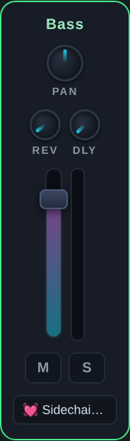
One strip: PAN · REV/DLY send knobs · fader + live meter · Mute / Solo · FX chips.
Fader — the channel's level in the mix. Get the kick and bass balanced first; everything else fits around them.
REV / DLY knobs — “sends”: how much of this channel is mailed to the two shared rooms — the Space Verb bus and the Sync Echo bus (their own strips sit to the right of the channels). Pads and plucks love reverb; leads love a touch of both.
FX chain — with a strip selected, use ＋ Add effect… in the right-hand panel: flanger, phaser, crusher, distortion, trance gate, sidechain pump… Click an effect's chip to tweak its knobs, the green dot bypasses it, ▲▼ reorder, ✕ removes. ⛓ Chain preset… drops in a whole combo at once (“Danger Zone”, “Ethereal Space”…).
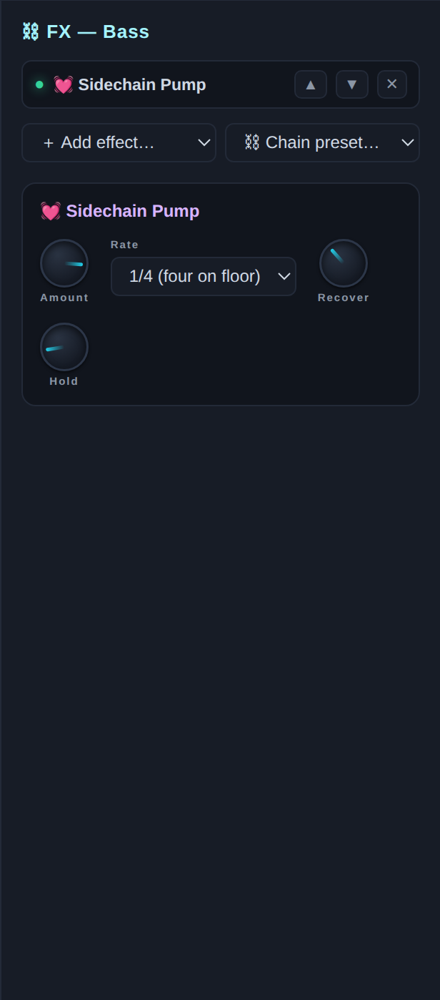
The FX panel for the selected channel.
The two moves that make it sound like EDM
1) Put Sidechain Pump on the bass, pads and leads — never the kick — and the whole track breathes in time.
2) Put Trance Gate on a sustained pad and draw a pattern in its 16 cells — instant rhythmic shimmer.
(The demo's Bass and Anthem channels ship with the pump already on — click them in the Mixer and look.)
CH 06
Automation — making knobs move by themselves
Give the target channel something to sweep — e.g. in the Mixer add a Filter effect to your pluck.
In the Playlist toolbar click ＋ Automation. Pick the target (e.g. Pluck · Filter Cutoff) and draw the curve: click to add points, drag to shape, right-click removes.
Your automation is now a brush. Paint it onto any track like a pattern clip — the curve stretches across the clip's length. An 8-bar clip rising from low to high = the classic filter-sweep build.
Double-click an automation clip any time to reshape it.
CH 07
Save & export
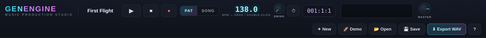
The transport bar. Right side: New · Demo · Open · Save · Export WAV.
💾 Save (Ctrl+S) — writes a .genengine.json project file, samples embedded, fully portable. 📂 Open loads it back. The app also autosaves to the browser every 20 seconds.
⬇ Export WAV — renders the finished audio: the whole Playlist song, or just the current pattern. This is the file you share with the world.
Working in the hosted preview (the claude.ai link)? Project saves work there, but WAV export needs the downloadable app — save your project in the preview, open it in GenEngine-standalone.html, export there.
CH 08
Your first song in 15 minutes — the exact clicks
✦ New for an empty project. Drag the BPM number to 138.
F8 Library → add Kick 909, Clap, Hat Closed, Rolling Trance Bass, Trance Pluck, Ethereal Pad (＋ on each card).
F6 Channels. Pattern 1 is selected. Right-click its chip → Rename → “Drums”.
Kick row: light steps 1, 5, 9, 13. Clap row: steps 5 and 13. Hat row: steps 3, 7, 11, 15 (the off-beats). Press Space — that's a beat.
Click ＋ in the pattern bar → new pattern → rename it “Bass”.
Double-click the Bass channel name → Piano Roll. Set SNAP to 1/16 and put short A2 notes on every 16th except where the kick lands (skip 1, 5, 9, 13). That off-beat gallop is the rolling trance bass.
Pattern ＋ again → “Chords”. Double-click Ethereal Pad → set BARS to 4 → draw whole-bar chords: A–C–E (bar 1), F–A–C (bar 2), C–E–G (bar 3), G–B–D (bar 4).
Pattern ＋ once more → “Melody”. On Trance Pluck, draw a 1/16 arpeggio bouncing between A3, C4, E4, A4. Turn its REV and DLY sends up in the Mixer (F9).
F5 Playlist. Brush = “Drums” → paint at bar 1, drag its edge out to bar 8.
Brush = “Bass” → paint bars 1–8 on the next track.
Brush = “Chords” → paint bars 9–16. Also extend Drums and Bass across 9–16.
Brush = “Melody” → paint bars 13–16 (let it enter late — anticipation!).
In the Mixer, add Sidechain Pump to Bass, Pad and Pluck (⛓ Chain preset → “Sidechain Pump”). Feel it breathe.
Shift-drag the Playlist ruler across bars 1–16, press Space, and listen top to bottom. Nudge faders until kick and bass sit together.
💾 Save, then ⬇ Export WAV. You just produced a record. 🎧
CH 09
When something's wrong
Symptom
Fix
No sound at all
Click anywhere once (browsers unlock audio on first click). Check the MASTER knob, the tab isn't muted, Mac volume up.
“I added an instrument but can't find it”
It's in CHANNELS (F6), the new row at the bottom of the rack — not in the Playlist. Tracks never show instruments.
Keyboard plays the wrong instrument
Keys always play the selected channel. Click the channel's name first (its row lights up).
Pattern plays, but SONG is silent
Nothing is painted in the Playlist yet — notes only make it into the song inside clips. Also check the loop region actually covers your clips.
One channel went quiet
Its mute dot is off, or another channel is soloed (right-click a dot to un-solo), or its volume knob / fader is down.
My steps grid is too short
Raise BARS + in the pattern bar — each bar adds 16 steps.
A GarageBand file won't import in Chrome
.caf needs converting — run Harvest GarageBand Sounds.command, or use Safari, which reads it natively.
“I ruined it”
Ctrl+Z. Up to 80 steps of undo. Breathe.
CH 10
Cheat sheet
Key
Does
Space
Play / pause
F5F6F7F8F9
Playlist · Channels · Piano Roll · Library · Mixer
1–9
Select pattern (queues at the next bar while playing)
Z-row / Q-row
Play the selected instrument (two octaves) · −/= shift octave
● + play
Record your keys into the current pattern
Ctrl+Z / Ctrl+Y
Undo / redo
Ctrl+B
Duplicate selected notes (Piano Roll)
S
Toggle 303 slide on selected notes
Ctrl+S / Ctrl+O
Save / open project
⚡ GENENGINE Songbook · lives in Music GenEngine/docs/ ·
press ? inside the app for the quick version Bring the music in your heart to the world. 💜